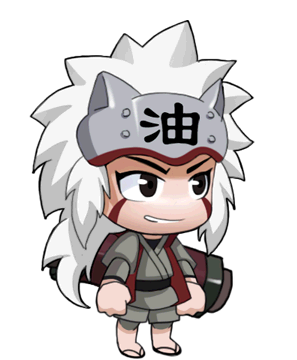

<!--
    Atrbutos HTML
    -- informações extras
    -- configurações
-->



<!--
    src e alt são os atributos
    "" o que vier dento das aspas serão
    os conteúdos.
    
-->

<!--
    Atributo booleano
    Atributo verdadeiro ou falso
    não precisa de conteúdo
-->
<input type="text" disabled>

<a href="www.google.com"> Link</a>